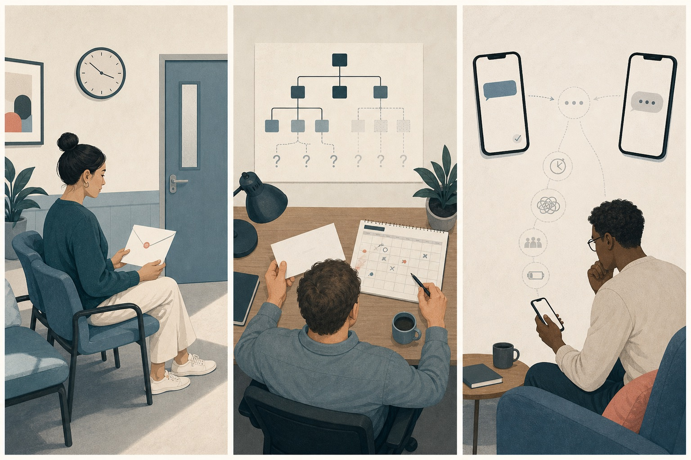
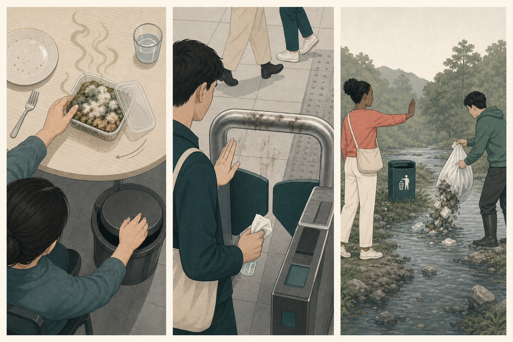

拐弯时，一辆车正失控冲向你。
先判断，再展开
恐惧。威胁具体、迫近，身体能立刻选择闪避。焦点是“怎样保护自己”，不是“谁应该负责”。
DAY 02 · ANXIETY / DISGUST / LONELINESS
焦虑在扫描尚未弄清的威胁，厌恶在排斥不愿接触或纳入的对象，孤独在寻找没有得到的重要联结。今天不要求分析私人经历，先用许多例子积累这种区分。
CLOSED-BOOK RECALL
先在心里判断最突出的情绪，再展开理由。回忆比重新阅读更能检验你是否已经形成了可用的区分线索。
恐惧。威胁具体、迫近，身体能立刻选择闪避。焦点是“怎样保护自己”，不是“谁应该负责”。
愤怒。存在可归责的越界：某个人本可以不这样做。焦点是责任、公平和恢复边界。
悲伤。重要联结已经失去。焦点是失去的对象以及没有它之后的生活，而不是未来仍可能发生的伤害。
具体危险 → 恐惧；可归责的越界 → 愤怒；已经发生的失去 → 悲伤。
FIVE-DAY MAP
新概念不是另起炉灶。焦虑靠恐惧作参照，厌恶靠愤怒作参照，孤独靠悲伤作参照。
具体威胁、可归责伤害与重要丧失。
不确定威胁、排斥接触和缺少联结。
区分“我不好”“我做错了”和威胁解除。
认识亲近联结、好事发生与期待达成。
用开放回答和混合情境检验区分能力。
READ FIRST · SCORE SECOND
评分没有标准答案，只是邀请你观察三种情绪可能同时存在。结果不会保存、不会上传，刷新页面就会清空。
0＝几乎没有 · 6＝非常强
你感到可能有坏事，但不知道威胁究竟是什么、会不会影响自己，也没有明确的逃离方向。注意力会反复扫描线索，因此焦虑通常突出。
0＝几乎没有 · 6＝非常强
气味和质地提示污染，身体倾向闭气、转头、把它丢掉并清洁接触面。核心不是追责，而是不让这个对象进入身体或环境。
0＝几乎没有 · 6＝非常强
人很多并不等于联结存在。你想要的是被看见、被理解或被在意，却没有得到，所以孤独通常比“一个人待着”更准确。
THREE NEIGHBORING EMOTIONS
身体都可能紧绷、回避或难受，但情绪不是靠表面反应区分，而是靠情境被赋予的意义。
ANXIETY · 不确定的潜在威胁
当你觉得可能有坏事发生，却无法确定威胁是什么、何时出现或会造成多大影响时，注意力会转入持续警戒和搜集线索。
模糊、抽象或尚未被识别的潜在威胁。
总觉得会出事，但到底是什么？是不是漏掉了线索？
扫描环境、反复设想、检查、寻求确定性、提前控制。
我正在试图弄清哪一种不确定威胁？
恐惧面对的是相对具体、迫近的危险，例如车辆正冲过来，因此可以立刻逃离。焦虑面对的是潜在、未识别的威胁：因为不知道该躲什么，只能保持警觉、搜集更多信息。日常语言会混用两者，这里用这条边界帮助学习。

DISGUST · 排斥接触与纳入
当一个对象被感知为污染、腐坏、令人反感或不应进入身体与生活边界时，会产生拒绝接触、排除或清除它的需要。
这个东西是否令人排斥、污染我，或不应被纳入。
别碰我。离远一点。把它清出去。
闭气、转头、拉开距离、丢弃、清洁、拒绝接触。
我想把什么隔离、排除或赶走？
愤怒想制止行为、追究责任、恢复公平；厌恶更像“不要让它靠近或进入”。面对卑劣行为时两者可能并存：想让行为者付出代价是愤怒，想与其切割、拒绝接触是厌恶。厌恶的触发也受学习和文化影响，不等于客观道德判决。

LONELINESS · 没有得到的重要联结
当你渴望被某个人或群体在意、理解、接纳或陪伴，但现实中的联结低于自己需要的程度时，会感到孤独。
想要的有意义联结，与实际得到的联结之间的缺口。
没有人真正看见我。我想靠近，却不知道能找谁。
寻找联系、发出联结信号；长期受挫后也可能退缩或自我保护。
我需要哪一种重要联结，却没有得到？
悲伤关注已经失去的人、关系或生活；孤独关注此刻没有被满足的联结需要。分手后可能既悲伤又孤独：悲伤在哀悼那段关系，孤独在感受现在缺少陪伴、理解与在意。
ONE-MINUTE COMPARISON
哪一种坏事可能发生，但我还没弄清？
扫描、设想、寻求确定我想把什么隔离、拒绝或清除？
拉开距离、排除、清洁我需要哪一种重要联结，却没有得到？
寻找回应、靠近、被理解CASE ATLAS
下面把三个概念放进不同生活领域。阅读时观察：外在事件可以很不一样，但同一种情绪仍在回答同一个核心问题。
NEAREST NEIGHBORS
不是二选一。先看两种情绪是否同时存在，再说清它们各自关注什么。
“车正在撞来。”来源、方向和保护动作都比较清楚。
“总觉得会出事。”不知道该躲什么，于是持续扫描线索。
能指出具体威胁及行动方向，更接近恐惧；只能说潜在风险，更接近焦虑。
“他不该这样做。”想制止、质问、恢复边界或公平。
“别让它靠近。”想转开、丢弃、清洁，或拒绝与其为伍。
两种冲动可能并存，但一个面向责任，一个面向接触边界。
“那段关系回不来了。”注意力停在失去的对象与过去。
“现在没有人真正陪伴我。”注意力停在当下的关系缺口。
前者更接近悲伤，后者更接近孤独；失去关系时经常两者都有。
LONELINESS HAS MANY SHAPES
真正的判断标准是联结是否满足了你的需要。独处可以自在，人群中也可能非常孤独。
有人可以聊天，却没有能安全袒露、会认真在意你的亲密联结。
缺少归属某个群体、共同体或稳定朋友圈的感觉。
平时拥有联结，但在一个重要时刻，想找的人暂时无法出现。
周围有很多互动，却没有一个交流能触及你真正关心的部分。
物理距离很近，身份上也亲密，但长期得不到理解、回应或关心。
渴望联结，却因多次被忽视或拒绝而不敢再发出信号，缺口因此延续。
别只问“我是不是一个人”，改问：我希望谁以什么方式回应我？现在缺少的是陪伴、理解、归属，还是被重视？
MIXED EMOTIONS
你刚加入一个陌生团队，听说组织可能调整但没人说明影响；午餐时公共冰箱里的腐坏食物已经渗漏；同事们熟络聊天，你几次加入都没有得到回应。
组织变化可能影响自己，但威胁的内容和概率都不清楚。
腐坏物带来污染线索，身体想远离、丢弃并清洁。
想被新群体接纳和回应，却没有获得有意义的联结。
把情境切成三个“对象”后，混乱会下降：组织传闻、腐坏食物、同事关系分别触发不同的评估。强弱没有标准答案。
AFFECT LABELING · RETRIEVAL
先在心里选最突出的词，再展开。辨析的目标不是猜中答案，而是能指出自己使用了哪条线索。
主管只发来“明早聊一下”，没有主题；你整晚反复回想最近每个细节。
坏结果尚不明确，你只能不断扫描和设想。若明早直接看到解雇通知，威胁变具体，恐惧可能更突出。
喝了一口牛奶后才发现已经变质，味道酸败，你立刻吐掉并漱口。
核心行动是把不应进入身体的东西排出并清洁。若随后担心中毒，焦虑或恐惧会加入。
群聊一直很热闹，但你认真分享的一件重要事情没有任何人回应。
缺少的不是消息数量，而是自己在意的内容没有被看见和承接。
远处有个形状像蛇，但光线太暗，你不知道那里究竟有什么，只能不停盯着。
尚未识别、持续扫描时更接近焦虑；确认是一条正在逼近的蛇后，具体威胁会让恐惧上升。
有人故意把脏污物抹在你的桌上，你既想让他道歉，也想马上把桌面清干净。
追责、要求道歉是愤怒；远离污染、清洁桌面是厌恶。两种行动倾向指向不同对象。
好友最近很忙，关系并没有结束，但你连续几周找不到能真正说话的时刻。
核心是当下联结不足，而不是关系已经永久失去。如果你开始哀悼“从前的我们不再存在”，悲伤也会加入。
TRANSFER WITHOUT WRITING
不需要填写或保存。下次情绪出现时，只在心里完成三步。
只说摄像机能拍到的事情，暂时删掉“糟糕、恶心、没人喜欢我”等判断。
例如：对方说“明天聊”，没有说明主题；我现在还不知道谈话内容。
不要说“我就是很难受”。可以说：我对未知后果焦虑；对某个污染物厌恶；也因为没有人能商量而孤独。
精确命名不是为了消灭情绪，而是让每一种情绪不再替另外两种说话。
WHAT TO EXPECT
不需要立刻变得平静，也不需要在真实生活里每次都判断正确。能主动比较两个相近概念，并说出判断线索，就已经是在建立情绪粒度。
DAY 02 · TAKEAWAYS
如果暂时没有明显感受，也不代表训练失败。今天的任务是积累情境模型，让以后真实情绪出现时，多一个可识别的线索。
RESEARCH BASIS
页面借鉴情绪粒度训练中“概念知识、例子、比较与情境迁移”的思路，并为第二天加入相近概念辨析。
原始五日干预研究：通过概念、例子和区分练习提升负面情绪区分。
焦虑面对未识别或抽象威胁，行动倾向是保持警觉并扫描信息。
厌恶的排斥、避免接触与污染防护，以及学习和文化差异。
孤独是期望的有意义联结与现实联结之间的差距，不等于独处。
关于情绪粒度、可能机制与现有证据边界的综述。
这是基于公开研究和情绪概念资料制作的阅读式改编，不是对原实验刺激、测量和统计流程的精确复刻，也不用于诊断或治疗。情绪可能混合，文化、经验和情境会影响命名；示例的作用是提供判断线索，不是规定唯一答案。